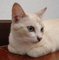
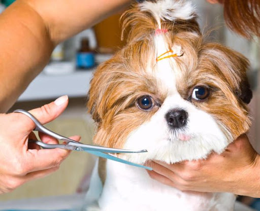
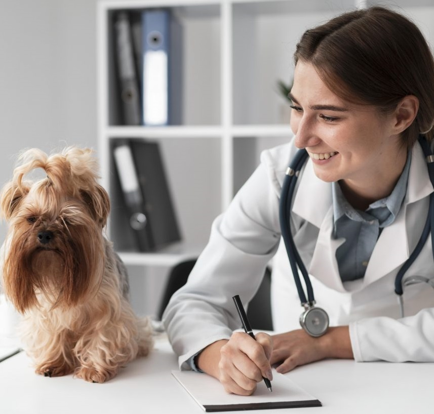

 Aqui você poderá adotar animais de estimação para adoção e ao mesmo tempo trazer algum animal que esteja abandonado ou passando por maus tratos para que possamos dar os cuidados necessários que eles tanto merecem, e possam encontrar uma nova família. Com a sua ajuda e apoio poderemos a cada dia contribuir com está bela missão de adoção animal.
 É indiscutivel que todo Pet se senti seguro no seu ambiente domiciliar, além de previnir pulgas e carrapatos entre outras Infermidades que ele encontrará em ambientes que tem outros animais. É notavél a rápida melhora no humor do Pet quando seus tutores decidem realizar os serviços de Banho&Tosa com um profissional que executa esses serviços em domilio. Ele até mesmo relacionará o banho ou tosa como algo bom e divertido, isso é mais saúde e felicidade pro seu melhor amigo.
 Assim como nós humanos os animais também necessitam de cuidados e atenção constantes, principalmente com relação a sua saúde. Temos a infraestrutura e profissionais totalmente capacitados para realizar exames e cirurgias simples e complexas, internamentos e toda estrutura necessária para o conforto do seu animal.